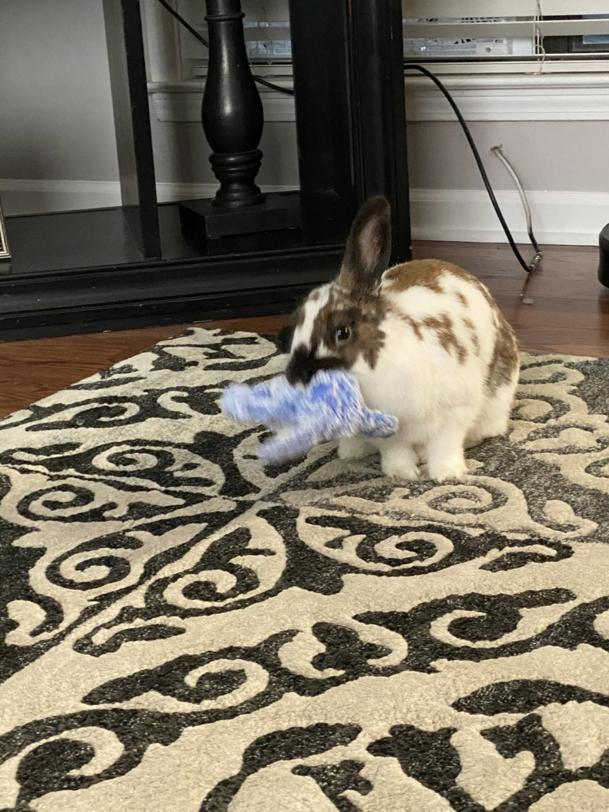
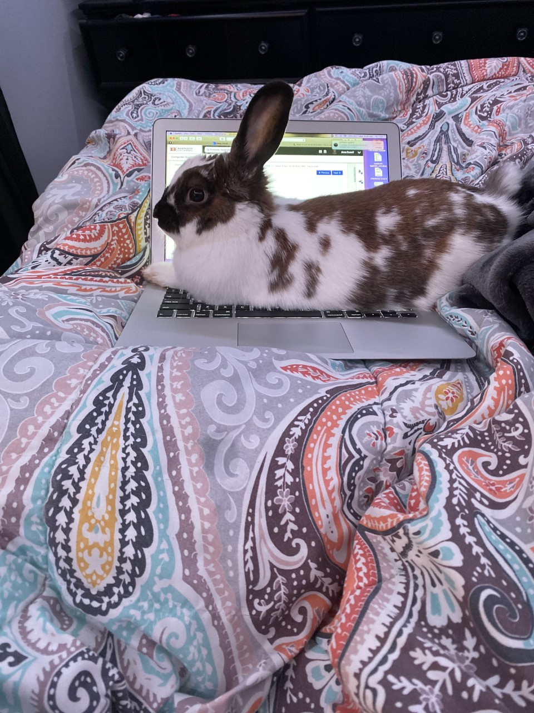
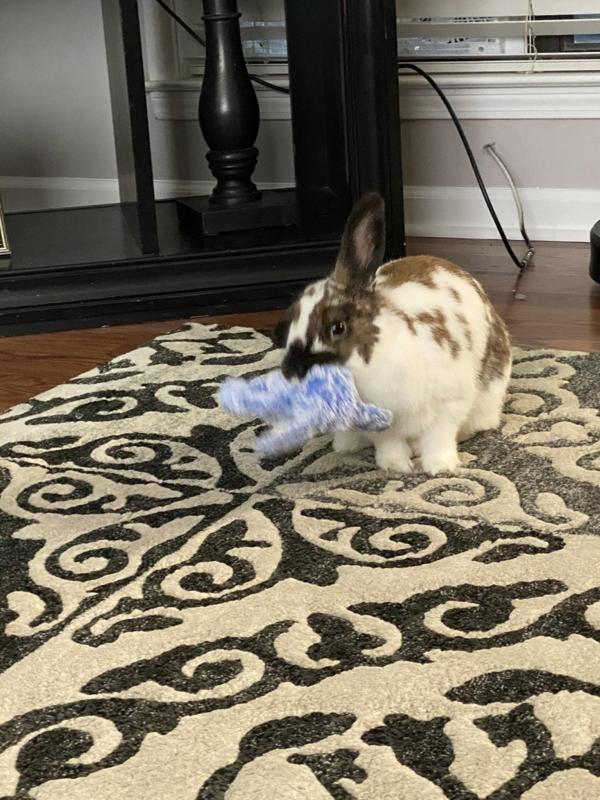
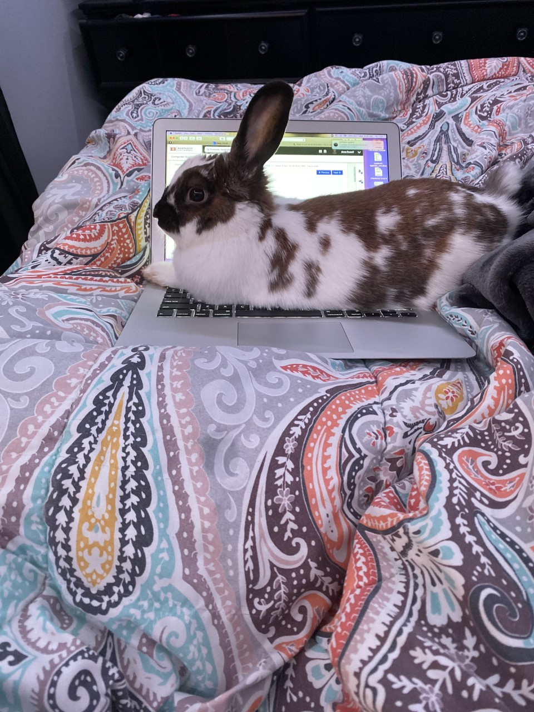
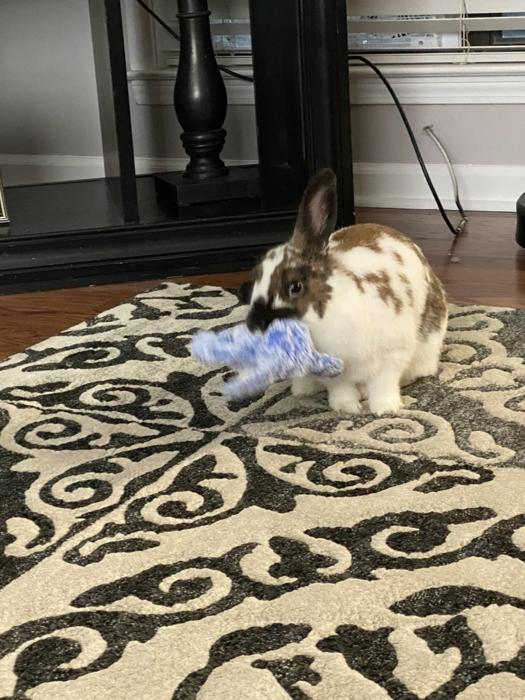
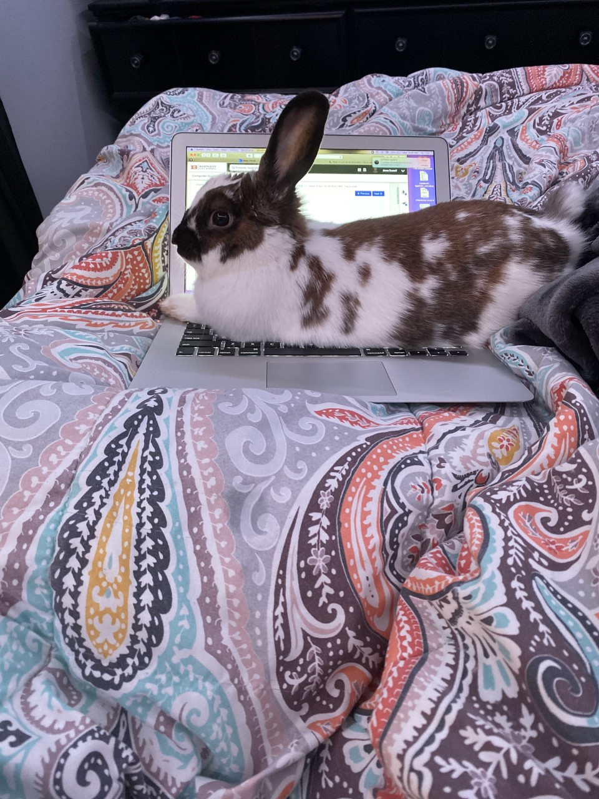

-Daisy is a holland lop and is the best rabbit breed to have as an in home, family friendly pet.
-
She is almost a year old, she’s to her full size and should live between 8-12 years.
-
Knowing how bunny’s teeth are, it is quite hilarious when she yawns.
-
When rabbits are happy, they tend to do “binx” hops which are their bodies turn sideways in the air when they jump, this is one of Daisy’s main traits that she does!
 



 -Daisy is a holland lop and is the best rabbit breed to have as an in home, family friendly pet.
-Daisy is a holland lop and is the best rabbit breed to have as an in home, family friendly pet.